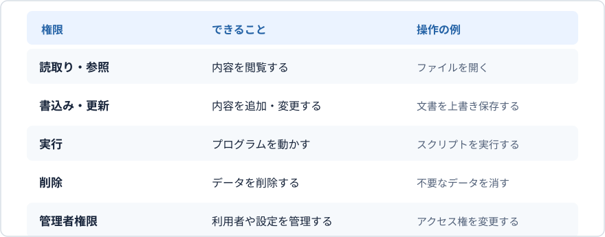
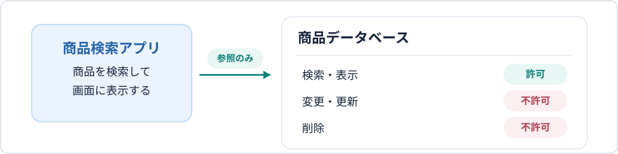
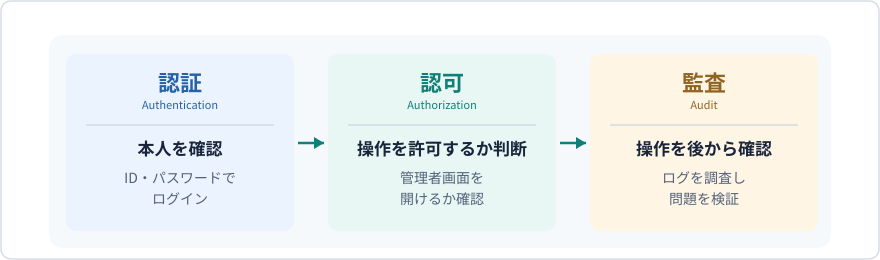
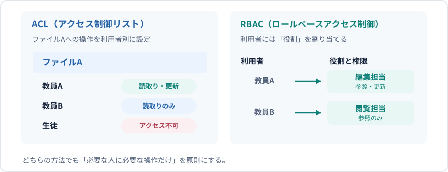
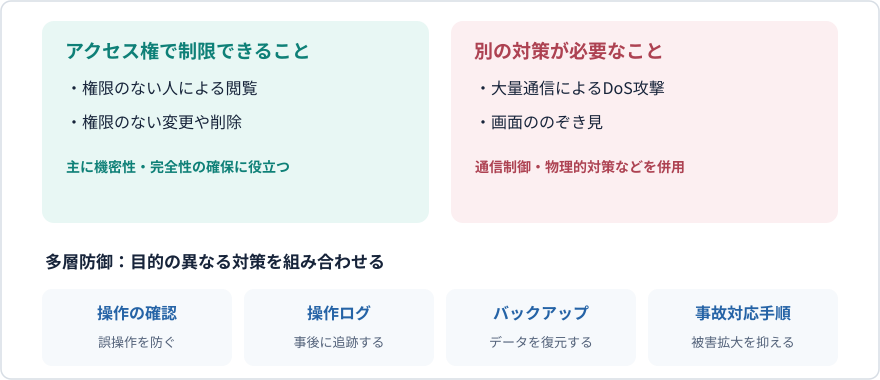

アクセス権の基本
アクセス権とは、ファイルやフォルダ、データベースなどに対して、利用者がどのような操作を行えるかを定めた権限です。
例えば、学校の成績管理システムでは、教員、事務職員、生徒など、さまざまな利用者がデータを利用します。しかし、全員が自由に成績を閲覧したり変更したりできると、個人情報の漏えいやデータの改ざんにつながるおそれがあります。
そこで、利用者の役割に応じて、閲覧や変更などの操作を許可する範囲を設定します。
例えば、成績管理者には成績の閲覧・変更・削除を許可し、担当教員には閲覧と変更を許可します。生徒には、自分自身の成績だけを閲覧できるようにする、といった設定が考えられます。
このように、誰が、どの情報に対して、どの操作を行えるかを決めるのがアクセス権です。
アクセス権に基づいて、データやシステムへの操作を許可したり拒否したりする仕組みを、アクセス制御といいます。

アクセス権の種類
アクセス権には、次のような種類があります。
| 権限 | 許可される操作 | 具体例 |
|---|
| 読取り権（参照権） | データの内容を読む | 文書を開いて内容を確認する |
|---|
| 書込み権（更新権） | データを書き込んだり変更したりする | 文書を編集して上書き保存する |
|---|
| 実行権 | プログラムなどを実行する | スクリプトを実行する |
|---|
| 削除権 | データを削除する | 不要なデータを削除する |
|---|
| 管理者権限 | システムや権限などを管理する | 利用者の権限を変更する |
|---|

例えば、文書ファイルを開いて内容を読むことはできても、上書き保存しようとすると「権限がありません」と表示される場合があります。
この場合、文書を読めるので読取り権はありますが、変更内容を保存できないので書込み権はありません。
実際に設定できる権限の種類や、操作に必要な条件は、OSやシステムによって異なります。
最小権限の原則
アクセス権を設定する際に重要なのが、最小権限の原則です。
最小権限の原則とは、利用者やプログラムに対して、業務や処理に必要な最小限の権限だけを与えるという考え方です。
例えば、商品情報をデータベースから検索して表示するだけのアプリには、データを読み取るための参照権限だけを与えればよいでしょう。
検索するだけのアプリに更新権限や管理者権限まで与えると、プログラムの不具合や不正な操作によって、データが変更・削除される危険が高まります。
また、図書管理システムで図書データの削除を許可する場合には、削除を業務上必要とする担当者だけに権限を与えることが望ましいです。
つまり、必要な人に、必要な範囲の権限を、必要な期間だけ与えることが基本です。

アカウントとアクセス権の管理
利用者の担当業務や利用資格の変化に応じて、アクセス権を適切に見直す必要があります。
特に注意が必要なのが、退職者や異動者のアカウントです。
退職者のアカウントを有効なままにしておくと、退職後もシステムにアクセスできる状態が残ります。本人だけでなく、認証情報を入手した第三者による不正アクセスにもつながるおそれがあります。
そのため、退職時にはアカウントを速やかに無効化し、必要な業務データは、引継ぎ先の権限を確認したうえで適切に引き継ぎます。

また、複数の利用者で同じアカウントとパスワードを共用することも避ける必要があります。
共用アカウントでは、誰がどの操作を行ったのかを特定しにくくなります。原則として利用者ごとにアカウントを設け、それぞれの役割に応じたアクセス権を設定することが望ましいです。
認証・認可・監査の違い
アクセス権と関係の深い仕組みに、認証・認可・監査があります。それぞれの役割は異なります。
| 用語 | 役割 | 具体例 |
|---|
| 認証 | 利用者が誰であるかを確認する | IDとパスワードを確認する |
|---|
| 認可 | 操作を許可するか判断する | 管理者画面を開く権限があるか確認する |
|---|
| 監査 | 操作の記録などを調べる | 操作ログから変更履歴を確認する |
|---|
例えば、成績管理システムにログインするとき、IDとパスワードを確認する処理は認証です。
ログイン後、管理者専用画面を開こうとした際に、管理者権限があるかを調べる処理は認可です。
利用者がいつ、どのような操作を行ったかをログに記録し、必要に応じて確認することは監査に関係します。

認証に成功したからといって、すべての操作が許可されるわけではありません。
認証によって利用者を確認し、その利用者に与えられたアクセス権に基づいて、要求された操作を許可するかどうかを判断します。
アクセス権の設定方法
アクセス権を設定する代表的な方法に、ACL（アクセス制御リスト）とRBAC（ロールベースアクセス制御）があります。
ACLでは、ファイルやデータなどの対象ごとに、利用者と許可する操作を設定します。例えば、ファイルAについて教員Aには読取りと更新を許可し、教員Bには読取りだけを許可します。
RBACでは、利用者に「編集担当」「閲覧担当」などの役割を割り当て、その役割に必要な権限をまとめて設定します。同じ役割の利用者には、同じ権限を割り当てられます。

どちらの方法でも、業務に必要な人に必要な操作だけを許可するという最小権限の原則が基本です。
アクセス権と情報セキュリティ
アクセス権を適切に設定することは、情報セキュリティの確保にも役立ちます。情報セキュリティには、機密性・完全性・可用性という三つの基本的な要素があります。
| 要素 | 意味 | アクセス権による効果 |
|---|
| 機密性 | 許可された人だけが情報を利用できること | 権限のない閲覧を防ぐ |
|---|
| 完全性 | 情報が不正に変更・破壊されないこと | 権限のない変更や削除を防ぐ |
|---|
| 可用性 | 必要なときに情報やシステムを利用できること | 不要な変更・削除による障害を減らす |
|---|
アクセス権は、特に情報漏えいの防止（機密性）と、不正な改ざんの防止（完全性）に効果があります。

一方、アクセス権を設定するだけでは防げない脅威もあります。例えば、大量の通信によってサービスを利用できなくするDoS攻撃には通信量の制限やネットワークの監視が必要です。また、画面ののぞき見には、画面の配置やプライバシーフィルターなど別の対策が必要です。
さらに、正当な権限を持つ利用者でも、誤操作によって重要なデータを削除する可能性があります。そのため、次のような対策も組み合わせます。
- 確認画面：誤った変更や削除を防ぐ
- 操作ログ：誰がいつ何をしたかを記録し、問題発生時の調査に役立てる
- バックアップ：データの削除や破損が起きた場合に復元できるようにする
- セキュリティ教育：利用者の不注意や知識不足による事故を減らす
- 事故対応手順：事故発生時の被害拡大を抑え、業務を復旧できるようにする
複数のセキュリティ対策を組み合わせて情報やシステムを守る考え方を多層防御といいます。
アクセス権の設定は重要ですが、それだけですべての脅威を防ぐことはできません。組織の情報セキュリティ方針に基づき、技術的な対策と運用上の対策を組み合わせる必要があります。